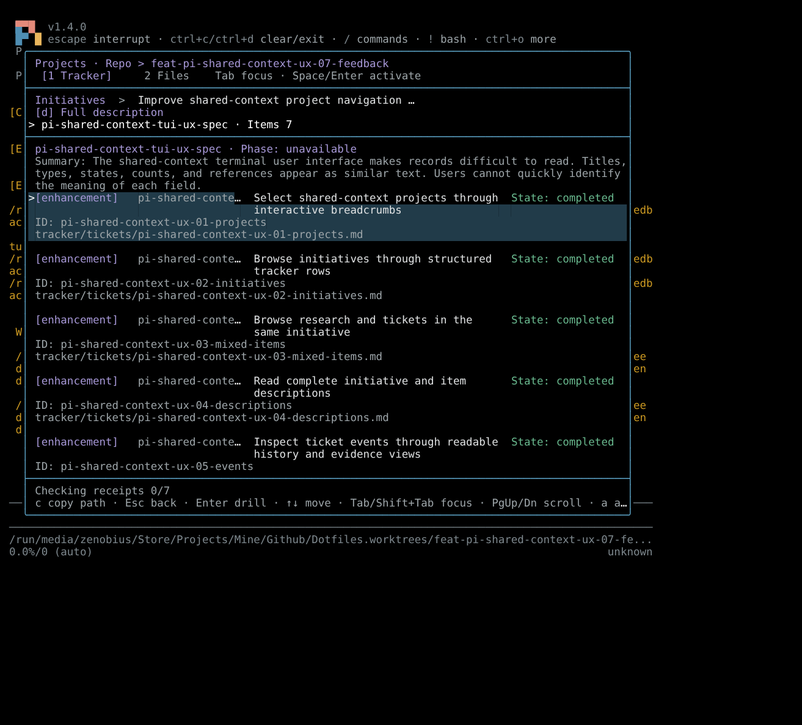
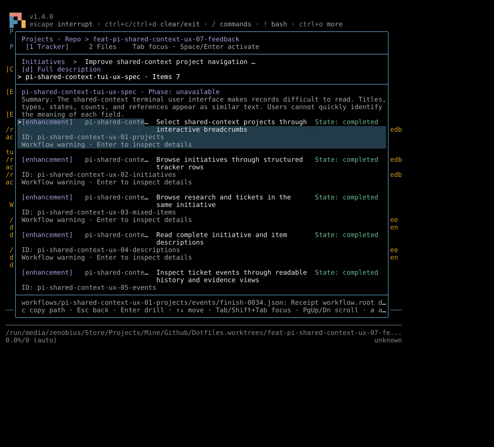
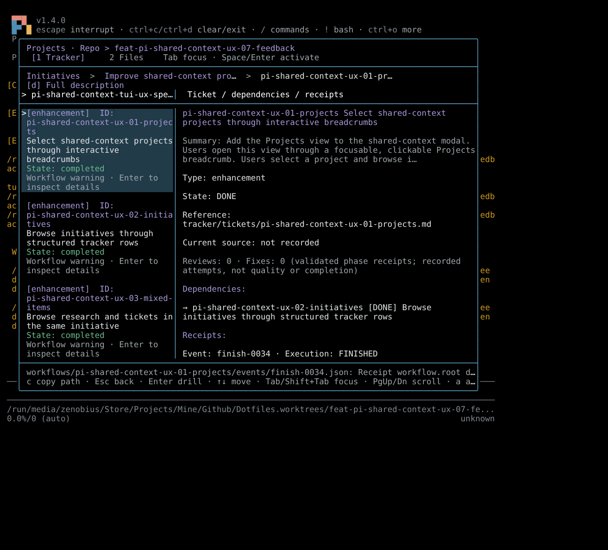
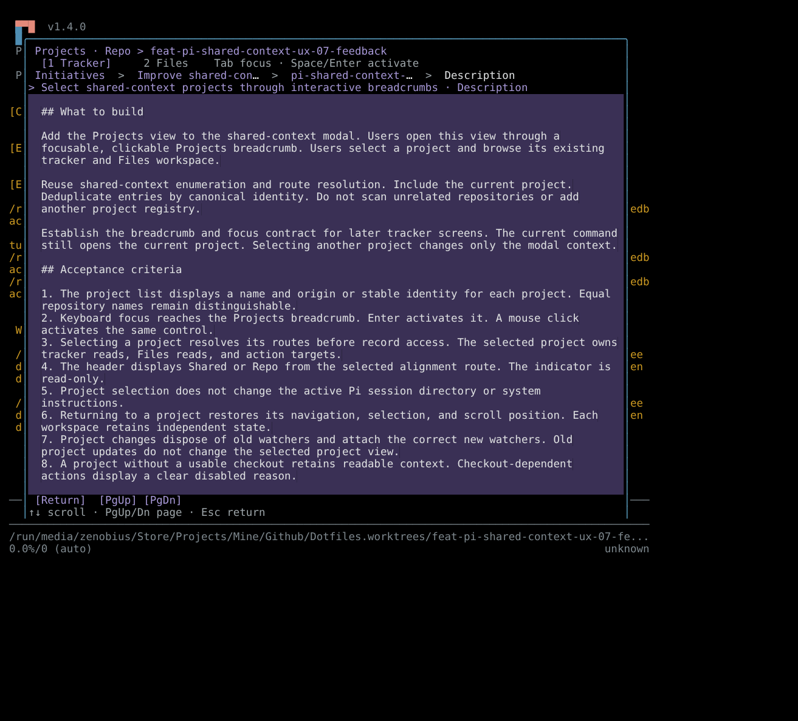
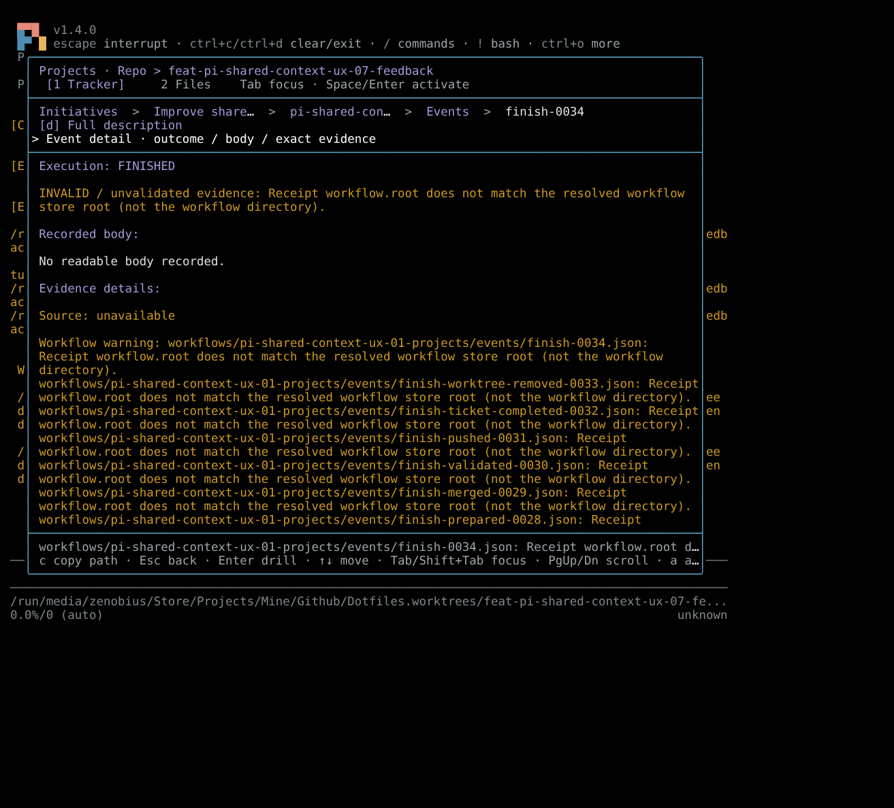
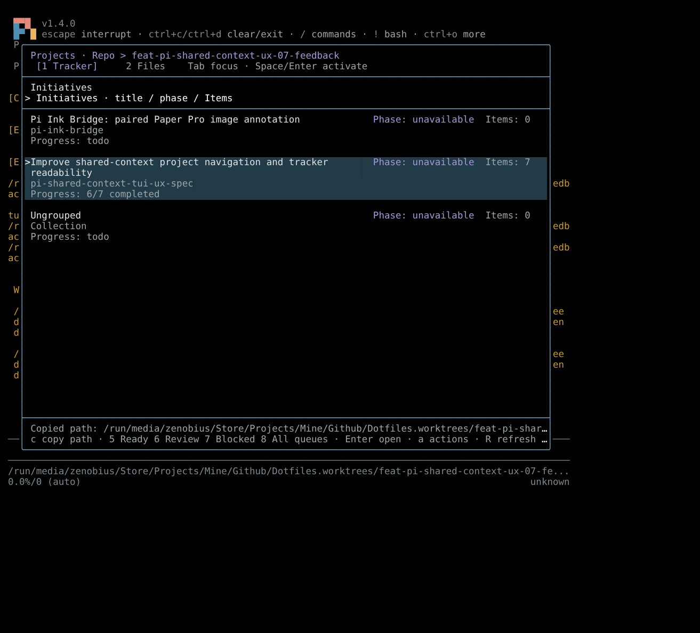
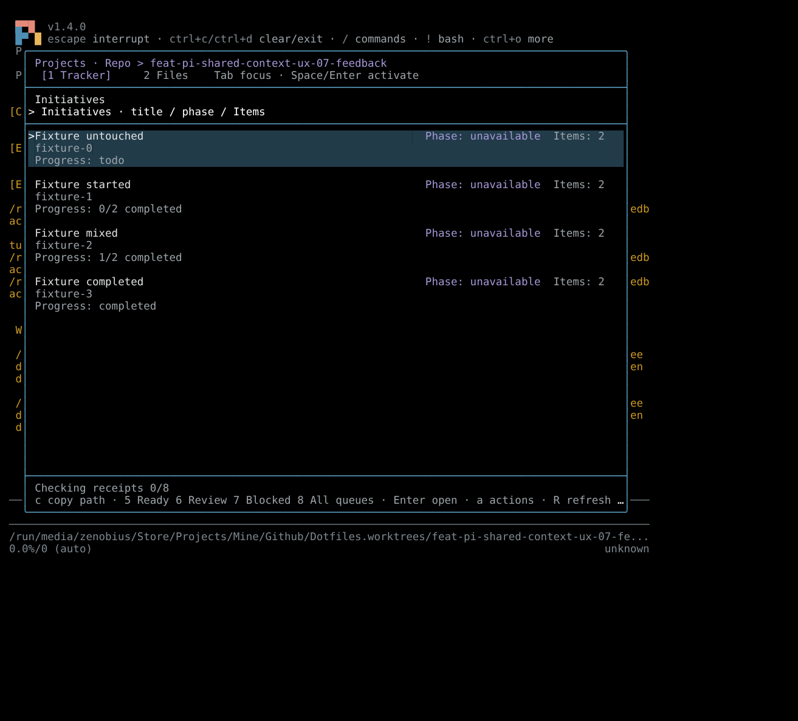
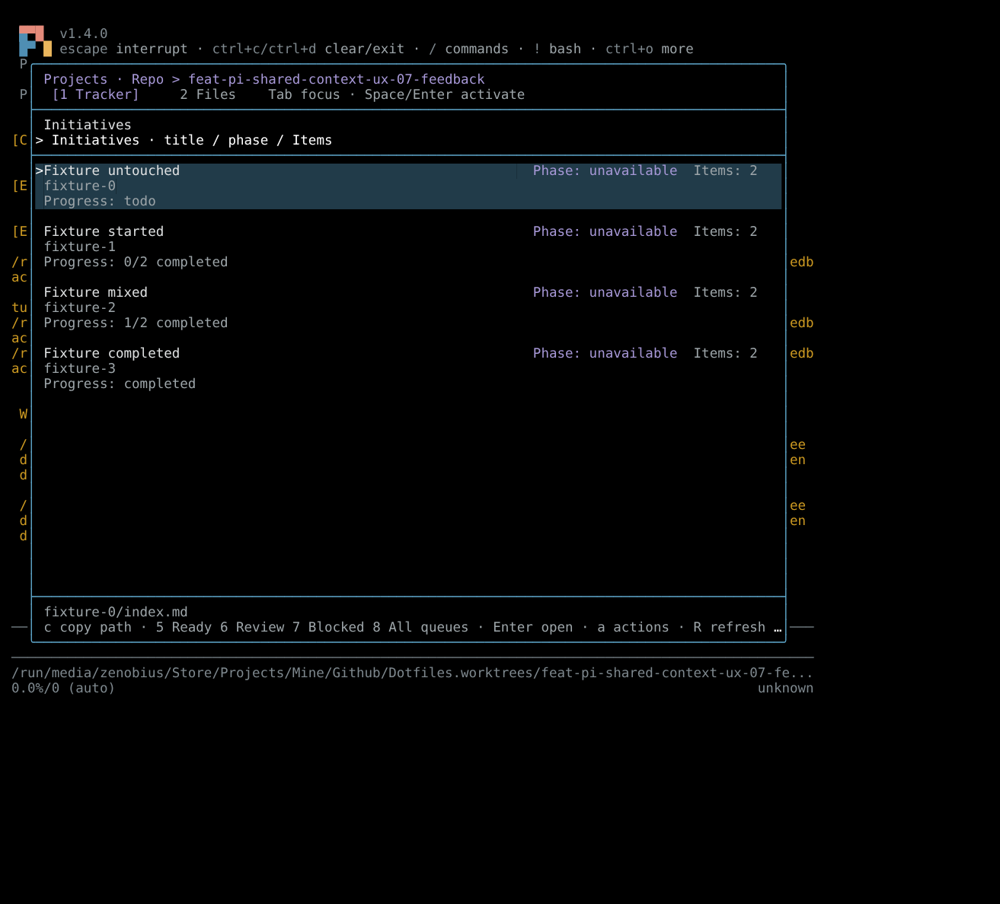
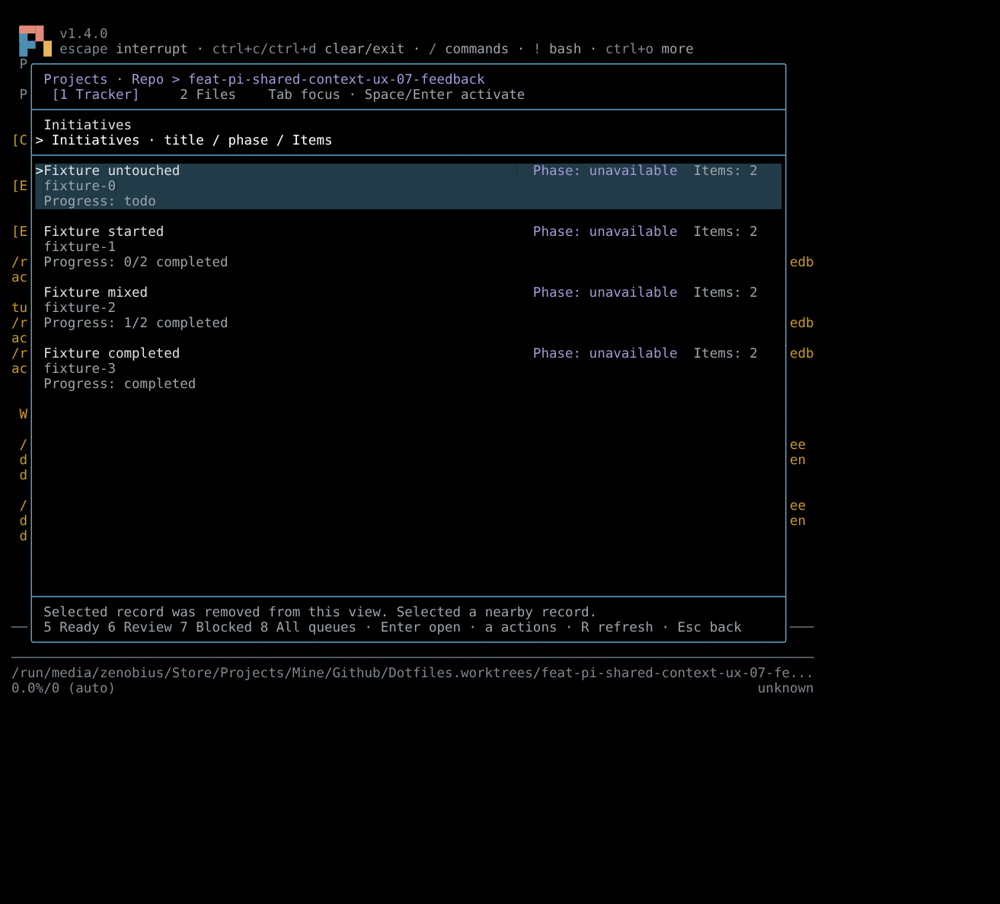

2026-10-30 · Pi 1.4.0 · termscope · 100 columns × 45 rows · isolated dark theme.
The native Pi CLI loaded the changed extension from the source worktree. The screenshots render termscope HTML in Chromium. They retain captured RGB foreground and background values. A black canvas and white default foreground represent the terminal. Unresolved palette-variable foregrounds use the browser default. These are terminal captures rendered in a browser, not desktop screenshots.
The loading harness used real repository records. It held the workflow loader behind an operator gate. Pressing L released that gate and called the unchanged loadTicketWorkflow function. Progress alone used labeled synthetic records through the existing loader interface. No tracker data changed.






Exact clipboard comparison records the expected path, actual bytes and successful command result.

The final smoke checked the two review findings after their fixes. The progress fixture used new and to do as untouched states. A hosted-initiative fixture offered no local path-copy keymap. Pressing c left the current clipboard bytes unchanged.


Final clipboard checks and the final interaction log record the exercised boundaries. The final harness records the fixture inputs.
No merge, push, ticket completion or worktree review phase ran. The ongoing feedback ticket remains claimed. Clipboard bytes were checked on Wayland, not X11, macOS, Windows or a remote OSC 52 terminal. The dark theme proves colour separation; the system theme awaits terminal palette reports in this headless environment.
Initial OMP and resize attempts are retained outside this portable report as unsuccessful capture history. Only the linked native Pi captures support these results. The full bundle typecheck found unrelated errors in muxer-subagents and writing-skills scripts. The extension-scoped typecheck passed.
The terminal processes closed. Synthetic progress records existed only in memory. Evidence files remain. The clipboard was used for native byte verification; this run does not manage its later contents. Temporary harness files and isolated settings are removed before handoff.